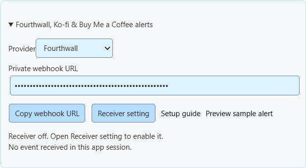
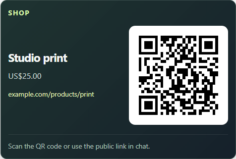

Подключите уведомления за 5 шагов
These steps connect Fourthwall, Ko-fi and Buy Me a Coffee. For signed membership alerts, follow the Patreon steps below.
- Открыть Monetization → Fourthwall, Ko-fi, Buy Me a Coffee & Patreon alerts и выберите своего Провайдер.
- Нажмите Настройка приёмника и включите удалённое управление расширением через API.
- Вернитесь в раздел монетизации и нажмите Копировать URL вебхука.
- Вставьте его в настройки вебхука поставщика (шаги ниже).
- Не закрывайте Social Stream Ninja.

Предпросмотр примера уведомления показывает только внешний вид. Суммы, Event Flow и вебхук не затрагиваются.
Для NinjaBacker, Throne, Amazon и eBay см. руководство по монетизации. Для Shopify см. Настройка Shopify.
Fourthwall
- В Fourthwall откройте Settings → For Developers → Webhooks («Настройки → Для разработчиков → Вебхуки»).
- Создайте вебхук и вставьте URL Fourthwall из SSN.
- Отметьте нужные события (см. таблицу).
- Сохраните и не закрывайте SSN.
| Событие Fourthwall | Отображается как |
|---|---|
ORDER_PLACED | Покупка. Её стоимость по-прежнему добавляется к пожертвованиям для совместимости со старыми настройками. |
GIFT_PURCHASE | Подарок. |
DONATION | Пожертвование. |
SUBSCRIPTION_PURCHASED | Новое участие. |
Заказы подарочных карт не добавляют стоимость дважды. Тестовые события пропускаются.
Документация вебхуков Fourthwall · Предпросмотр примера покупки
Ko-fi
- Открыть Вебхуки Ko-fi.
- Вставьте URL Ko-fi из SSN в URL вебхука и сохраните.
- Не закрывайте SSN.
Публичные чаевые, участие, заказы магазина и индивидуальные заказы используют одну ссылку. Закрытые платежи пропускаются. Заказы магазина и индивидуальные заказы отображаются как покупки и не увеличивают суммы пожертвований. Ko-fi не сообщает об отмене участия.
Документация вебхуков Ko-fi · Предпросмотр примера поддержки
Buy Me a Coffee
- В панели автора откройте Интеграции и выберите New webhook («Новый вебхук»).
- Задайте имя и вставьте URL Buy Me a Coffee из SSN.
- Отметьте нужные события (см. таблицу).
- Сохраните и оставьте доставку включённой. При ошибке проверьте там историю доставки.
| Событие | Отображается как |
|---|---|
donation.created | Пожертвование. |
extra_purchase.created | Покупка. |
commission_order.created | Покупка. |
wishlist_payment.created | Взнос на подарок. |
membership.started | Уведомление о новом участии (не отдельное списание). |
Скрытые заметки и анонимные сторонники остаются скрытыми. Тесты из панели управления (live_mode: false) пропускаются. Возвраты не уменьшают суммы.
Документация вебхуков Buy Me a Coffee · Предпросмотр примера взноса
Patreon chat and new pledges
Use Standard capture for chat and connect a webhook for new-pledge alerts. You can use either on its own or both together.
Capture chat
In SSApp, add a Patreon source in Standard mode, sign in with an account that can access the chat, and open the event or chat page. With the browser extension, enable Patreon capture and open that page in your browser. Keep the chat open and SSN on; new messages appear in your dock, while existing history is skipped.
Connect new-pledge alerts
- Открыть Monetization → Fourthwall, Ko-fi, Buy Me a Coffee & Patreon alerts, выберите Patreonи нажмите Копировать URL вебхука. In SSApp, your Patreon source's Set up Patreon alerts menu item opens the same panel.
- Sign in to the creator account whose pledges you want to receive. Open Patreon webhook settings, create a webhook using the copied URL, and enable New pledge (
members:pledge:create). - Copy that webhook's signing secret into SSN's signing-secret field. Turn on Enable Patreon alerts и нажмите Сохранить настройку. Keep SSN running and switched on to display incoming pledges; the Patreon chat page does not need to stay open for these alerts.
- Open your dock or multi-alerts overlay using the same SSN session and password. Keep subscriber alerts enabled and allow the Patreon source. For automation, use Event Flow's New Subscriber trigger with Patreon включённым.
Alerts show new pledges from the time you enable them. The tier and pledge amount appear when Patreon supplies them; hidden names remain Anonymous. Pledges do not increase donation totals. Free memberships, gifts, trials, declined/former memberships, upgrades, cancellations and recurring charges do not generate new-pledge alerts.
Patreon alerts use their own receiver; you do not need to enable remote API control of the extension. To show them in OBS, use your multi-alerts link or the Monetization activity-alert view. Patreon pledge alerts do not require an enabled product showcase.
Closing SSN or turning SSN off keeps pending pledges for up to seven days. Disabling Patreon alerts and saving clears the backlog and stops queuing new pledges. Disconnect removes the receiver; also remove its old webhook in Patreon before creating another connection.
Check the connection
Предпросмотр примера уведомления checks the appearance without sending a webhook or firing Event Flow actions. To check delivery from Patreon, use Send Test on your webhook in Patreon's dashboard, then check SSN's status and last-event time. Dashboard tests can trigger alerts and Event Flow actions when the sample qualifies as a new pledge.
Verified event received; no eligible new pledge means the signature was accepted, but the event did not qualify for an alert. A dashboard sample with an old pledge date is skipped. Keep the members:pledge:create trigger enabled to receive new pledges after setup.
If Patreon reports 401 / Invalid signature, copy the complete signing secret from that same webhook, paste it into SSN, and save again. If SSN remains waiting for an event, check the webhook URL and selected trigger in Patreon. Keep the webhook URL and signing secret private.
Импортировать товар Fourthwall
- В Fourthwall перейдите в Settings → For Developers («Настройки → Для разработчиков») и создайте Токен Storefront. Не используйте ключ API администратора.
- В SSN откройте Products & support links → Set up products and links → Import a Fourthwall product («Товары и ссылки поддержки → Настроить товары и ссылки → Импортировать товар Fourthwall»).
- Вставьте общедоступную ссылку товара и токен. Нажмите Загрузить данные товара.
- Проверьте название, изображение, цену и ссылку. Ссылка и токен должны относиться к одному магазину.
- Выберите назначение: Магазин, Подарок, Поддержка или Присоединиться.
- Нажмите Добавить товар или ссылку, включите Товары и ссылки поддержкии нажмите Сохранить настройку.

Что делает импорт
- За раз загружается один общедоступный товар в наличии.
- Токен определяет магазин для поиска. Он используется один раз и затем удаляется. Он никогда не сохраняется и не передаётся оверлеям.
- Если у вариантов или наборов разные цены, поле цены остаётся пустым.
- Это снимок данных. Цены, наличие и изображения не обновляются; при изменениях повторите импорт или отредактируйте запись.
- Можно сохранить до 20 товаров. Повторное добавление того же товара создаёт вторую копию.
Показывайте товары и QR-коды в эфире
Можно также вручную добавить любую общедоступную ссылку (Shopify, Tiltify, Patreon и т. д.). Это не подключает уведомления о платежах.
- В разделе Оверлей OBS для, выберите Товары и ссылки поддержки.
- Открыть Параметры ссылки оверлея и выберите Вид оверлея: Только витрина товаров, только карточка поддержки, только уведомления об активности или витрина и уведомления.
- Нажмите Копировать ссылку OBS и добавьте её в OBS как Источник «Браузер». Начните с 800 × 600. Используйте отдельный источник для каждого вида.
- В разделе Параметры отображения, закрепите первый товар или включите чередование, затем включите Показать QR-код.
- Отсканируйте QR-код телефоном, проверяя окончательный макет OBS.

Уведомления, multi-alerts и Event Flow
- Витрина показывает изображение товара. Меньшая карточка поддержки — нет.
- Уведомления об активности работают самостоятельно и никогда не показывают QR-код постороннего товара.
- Multi-alerts and the activity feed work with the same session, with no product list needed. The Monetization activity view needs the product list turned on for other providers; Patreon pledge alerts display independently.
- В Event Flow триггер пожертвования по-прежнему охватывает записи с
hasDonation. Для покупок или завершённых подарков используйте тип события. См. сопоставление событий.
Переключайте товары в эфире или делитесь одной ссылкой для зрителей: см. управление товарами в эфире.
Если ничего не появляется
| Проблема | Что попробовать |
|---|---|
| Приёмник выключен | For Patreon, turn on Enable Patreon alerts и нажмите Сохранить настройку. For Fourthwall, Ko-fi and Buy Me a Coffee, turn on удалённое управление расширением через API. |
| Отключено | Оставьте SSN включённым и проверьте интернет. Это подключение SSN, а не вашего поставщика. |
| События не получены | Проверьте выбранного поставщика, URL и настройки его вебхука. |
| Событие пропущено | Тесты, закрытые платежи, неподдерживаемые события и неверные суммы пропускаются. |
| Событие получено, но оверлея нет | Проверьте сеанс, пароль, фильтры, правила SSN и видимость источника OBS. Большинство покупок не являются пожертвованиями. |
| Уведомления появляются дважды | Не отправляйте один и тот же платёж и через поставщика, и через другой сервис. |
| Ошибка импорта | Проверьте ссылку товара, токен Storefront и доступность товара для всех. Его всегда можно ввести вручную. |
This is a live alert feed, not an order record. Use your provider's dashboard for payments, refunds, and shipping. Tiltify alerts aren't supported yet.